|
Ritorna all'indice delle parrocchie
Il numero abbinato ad ogni famiglia indica la relativa posizione nello Stato delle Anime
1 - Prete Giovanni Battista Landi - Paroco di questa Parrocchia
Comunità di S. Martino in Grania
1 - Landi Girolamo - lavoratore di terreni
2 - Trapassi Gregorio - proprietario di terreni e mezzaiolo
3 - Trapassi Giuseppe - mezzaiolo
4 - Dini Giovanni Battista - va a opera sopra i terreni e accatta
5 - Fiacchi Antonio - mezzaiolo
6 - Casini Giovanni - mezzaiolo
7 - n.d. Anna Maria - vedova - attende al podere
8 - Ardenghi Antonio - mezzaiolo
8 - Bellacci Giovanni Battista - coniugato in cassa di Ardenghi Antonio - attende al podere
Comunità di Villa Nuova
1 - Coppi Giuseppe - mezzaiolo
2 - Mazzini Austino - mezzaiolo
2 - Salvini Gaetano - coniugato in casa di Mazzini Austino - attende al podere
3 - Cenni Giacomo - va a opera sopra a terreni
4 - Casini Pietro - mezzaiolo - 17
Comunità di Ponzano
1 - Viligiardi Domenico - mezzaiolo - 14
2 - Bonelli Francesco - va a opera sopra a terreni
3 - Fineschi Antonio - mezzaiolo
4 - Soldati Giuseppe - mezzaiolo
5 - Guarnieri Michele - va a opera sopra terreni
Comunità di Tavena
1 - Cigni Antonio - mezzaiolo
2 - Tosi Antonio - mezzaiolo
Comunità di Grania
1 - Trapassi Pietro - proprietario di terreni e mezzaiolo
2 - Prugnoli Giovanni - mezzaiolo
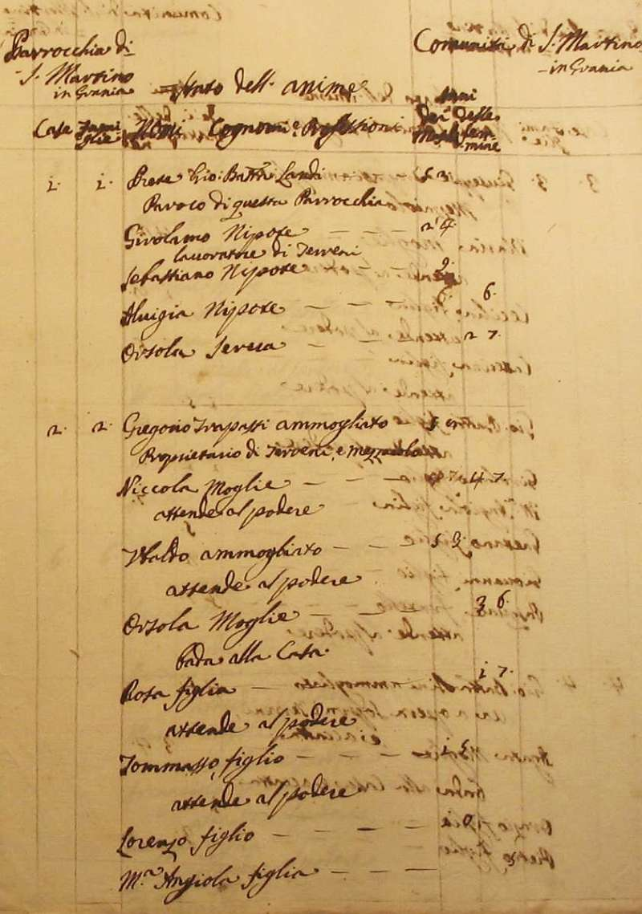
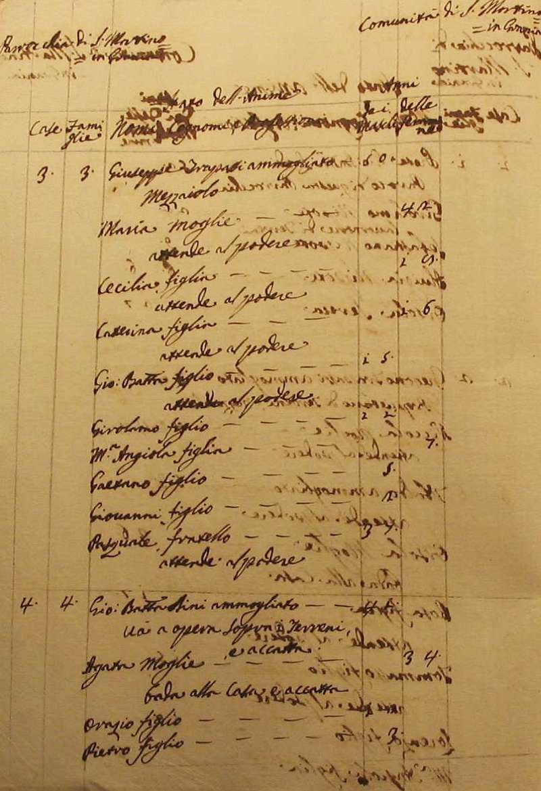
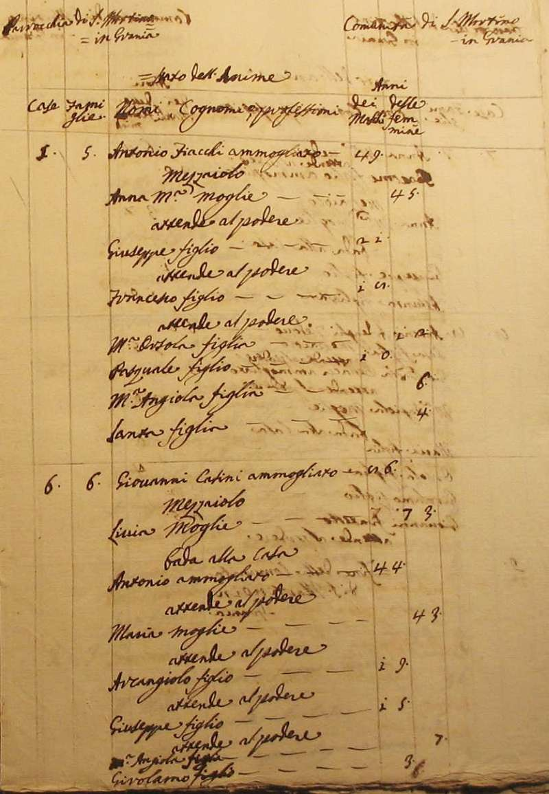
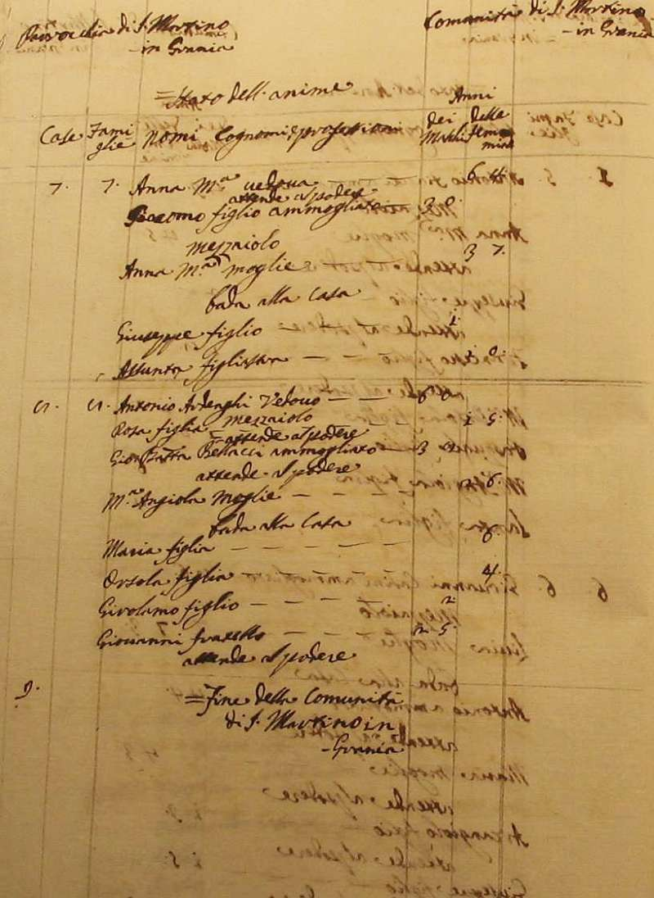
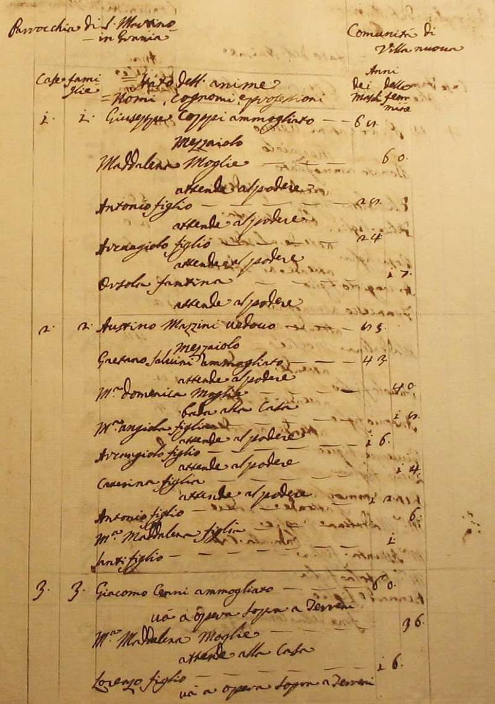
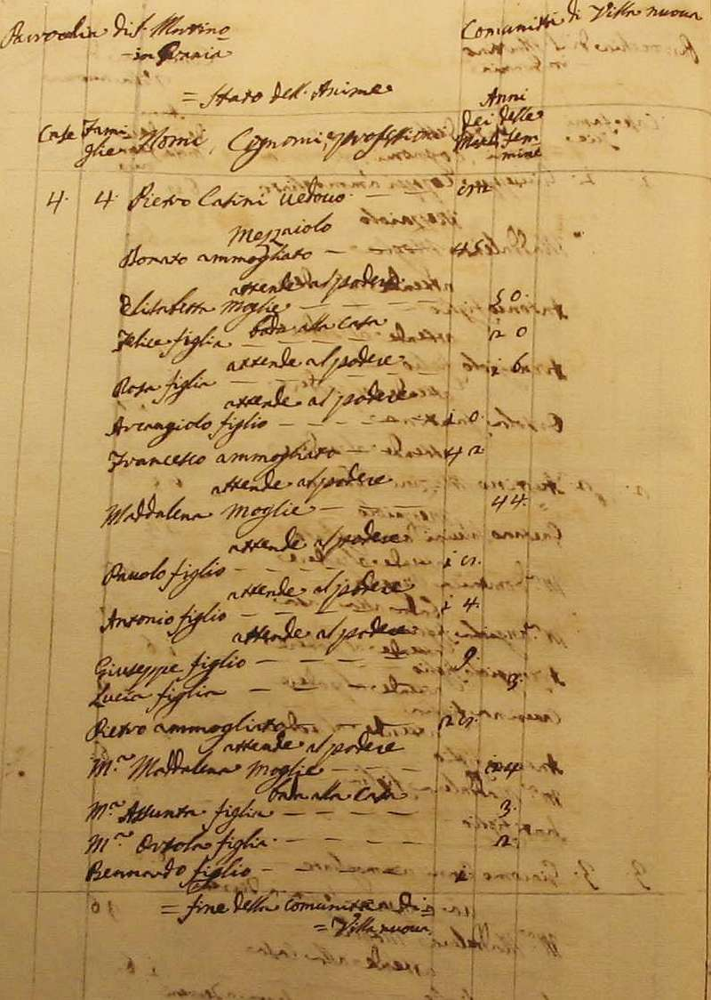
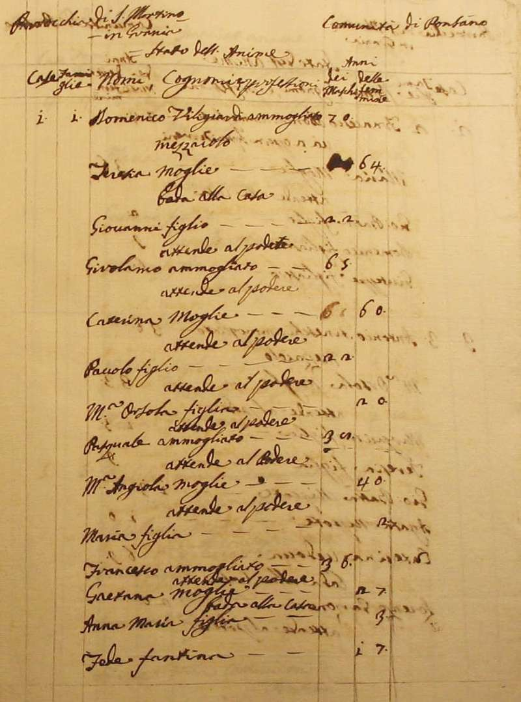
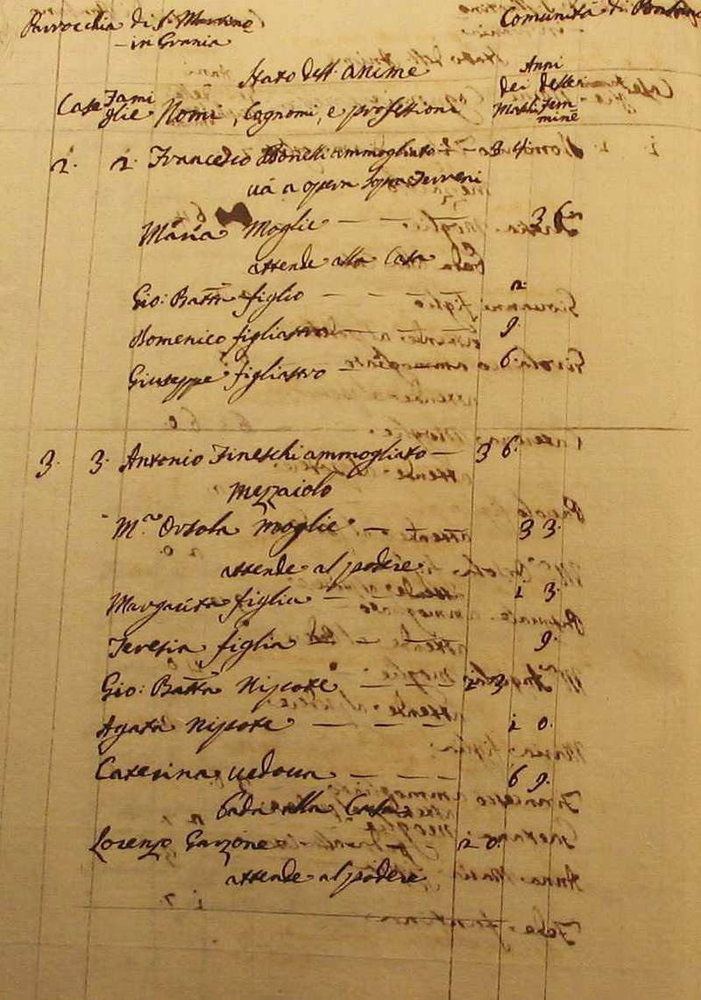
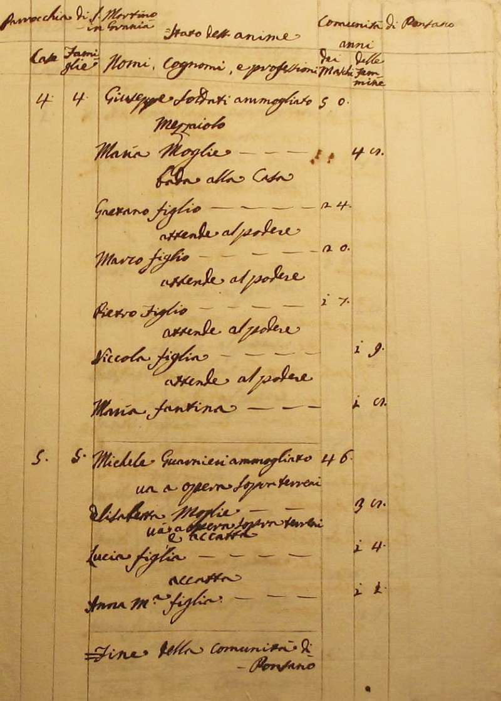
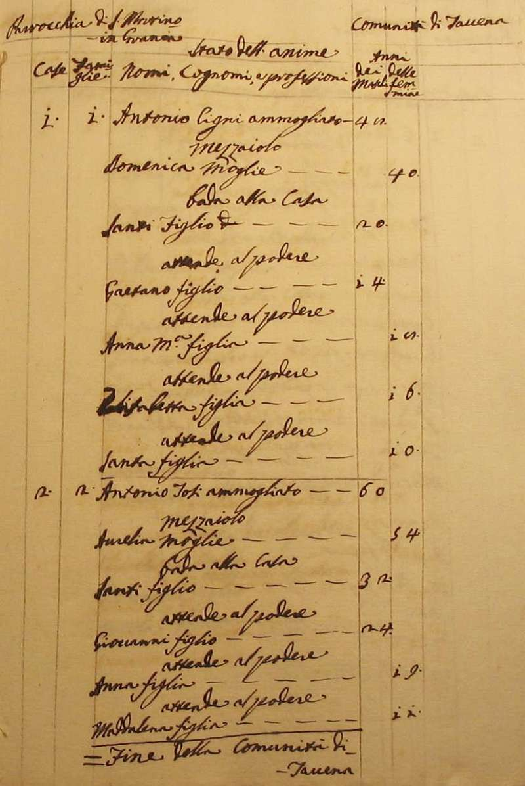
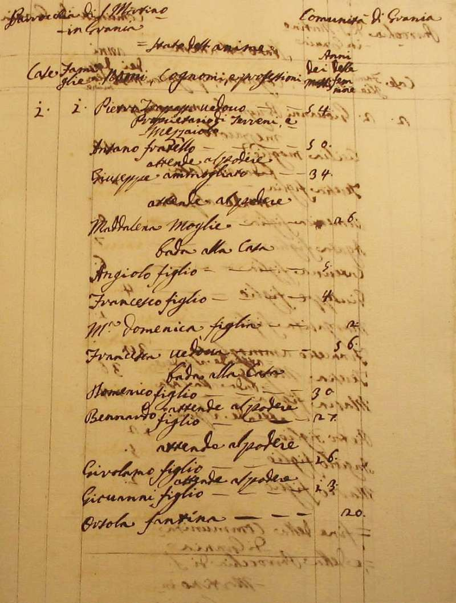
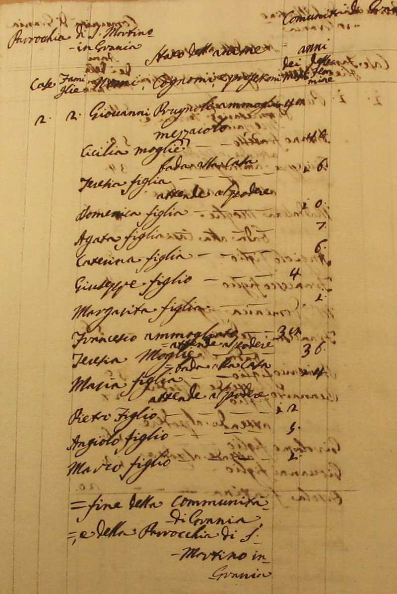
Torna ad inizio pagina
Ritorna all'indice delle parrocchie
| |

|